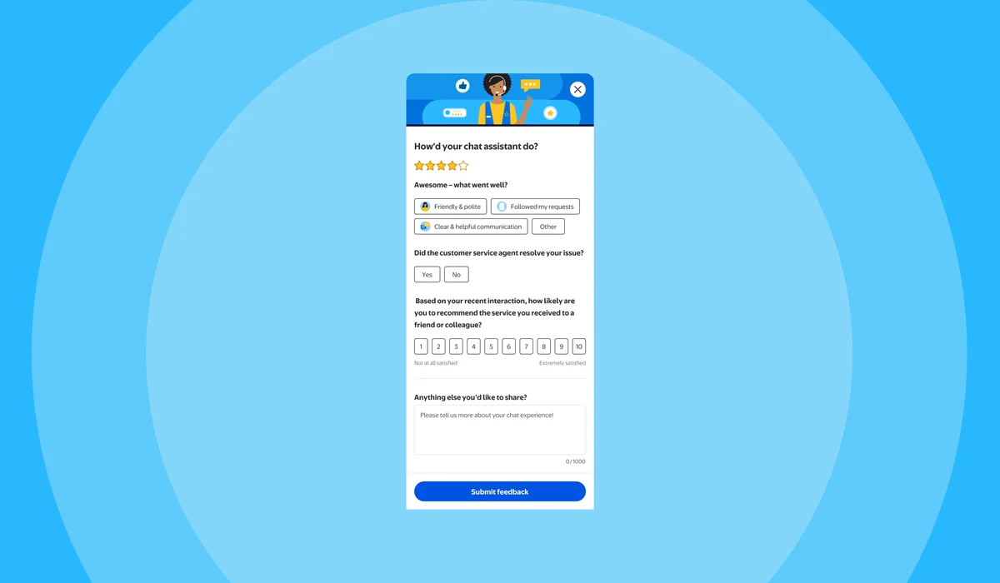

Walmart Post Contact Survey
I led the design strategy to move Walmart's post-care survey from an outside vendor onto Walmart's own platform, in the app and on Walmart.com.
- Company
- Walmart
- Area
- Customer feedback
- Users
- Customers after a care contact
- My role
- Led the design strategy

- saved a year in vendor licensing fees
- Millions
- the survey now lives on Walmart.com and in the app, with no external redirect
- In-app
Overview
I led the design strategy to migrate Walmart's post-contact survey from an external vendor to our internal platform. The move created a more cohesive customer experience, reduced operating costs and made giving feedback easier.
Opportunity
A disconnected brand experience
The third-party survey didn't reflect Walmart's visual identity, which made for a jarring handoff for customers who expected a consistent experience.
Friction in giving feedback
Customers got an email link that sent them to an outside website, adding steps and chances to drop off.
Solution
We redesigned the survey on Walmart's design system and built it directly into Walmart.com and the app, removing the external redirect. After customers rate their experience, they now get dynamic, personalized next steps right away, without leaving Walmart.
Impact
The new survey saves millions a year in licensing fees and gives customers a seamless, on-brand experience with personalized responses. Keeping customers inside Walmart's own experience improved projected response rates and opened new engagement opportunities.